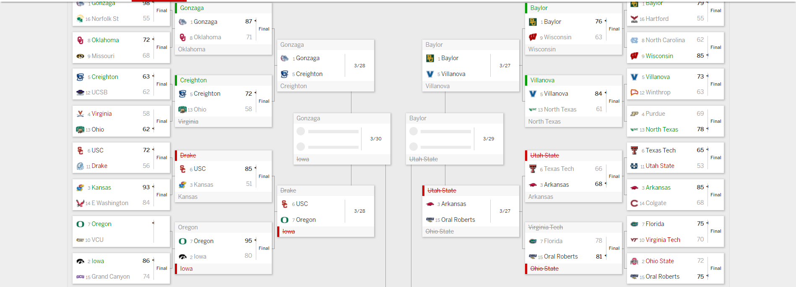
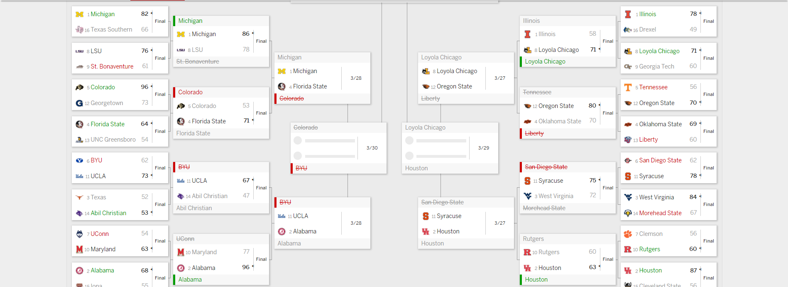

This past weekend has not been kind to many brackets. My bracket right now ranks in the 72.5 percentile after the first weekend, a shock after being last after day one.
That doesn’t make me feel right but something is up when your bracket jumps from last to above the majority.
library(tidyverse)## -- Attaching packages --------------------------------------- tidyverse 1.3.0 --## v ggplot2 3.3.2 v purrr 0.3.4
## v tibble 3.0.6 v dplyr 1.0.3
## v tidyr 1.1.2 v stringr 1.4.0
## v readr 1.3.1 v forcats 0.5.0## Warning: package 'tibble' was built under R version 4.0.3## Warning: package 'tidyr' was built under R version 4.0.3## Warning: package 'dplyr' was built under R version 4.0.3## -- Conflicts ------------------------------------------ tidyverse_conflicts() --
## x dplyr::filter() masks stats::filter()
## x dplyr::lag() masks stats::lag()library(tidymodels)## Warning: package 'tidymodels' was built under R version 4.0.3## -- Attaching packages -------------------------------------- tidymodels 0.1.2 --## v broom 0.7.2 v recipes 0.1.15
## v dials 0.0.9 v rsample 0.0.8
## v infer 0.5.4 v tune 0.1.2
## v modeldata 0.1.0 v workflows 0.2.1
## v parsnip 0.1.5 v yardstick 0.0.7## Warning: package 'broom' was built under R version 4.0.3## Warning: package 'dials' was built under R version 4.0.3## Warning: package 'infer' was built under R version 4.0.3## Warning: package 'modeldata' was built under R version 4.0.3## Warning: package 'parsnip' was built under R version 4.0.3## Warning: package 'recipes' was built under R version 4.0.3## Warning: package 'rsample' was built under R version 4.0.3## Warning: package 'tune' was built under R version 4.0.3## Warning: package 'workflows' was built under R version 4.0.3## Warning: package 'yardstick' was built under R version 4.0.3## -- Conflicts ----------------------------------------- tidymodels_conflicts() --
## x scales::discard() masks purrr::discard()
## x dplyr::filter() masks stats::filter()
## x recipes::fixed() masks stringr::fixed()
## x dplyr::lag() masks stats::lag()
## x yardstick::spec() masks readr::spec()
## x recipes::step() masks stats::step()library(zoo)## Warning: package 'zoo' was built under R version 4.0.3##
## Attaching package: 'zoo'## The following objects are masked from 'package:base':
##
## as.Date, as.Date.numericLet’s load in games data from my lovely class of all college basketball games over the last six seasons.
games <- read_csv('~/R/JOMC491/Data/updcbblogs1521.csv')## Parsed with column specification:
## cols(
## .default = col_double(),
## Season = col_character(),
## Date = col_date(format = ""),
## TeamFull = col_character(),
## Opponent = col_character(),
## HomeAway = col_character(),
## W_L = col_character(),
## URL = col_character(),
## Conference = col_character(),
## Team = col_character()
## )## See spec(...) for full column specifications.Creating the Metrics
I had a simple idea in generating my model. The four factors of basketball have become common to explain why and how a team does well. I wanted to capture that with a rolling average over the last 10 games and combining that to make a cumulative of all the rolling means as well.
games <- games %>% mutate(
Possessions = .5*(TeamFGA - TeamOffRebounds + TeamTurnovers + (.475 * TeamFTA)) + .5*(OpponentFGA - OpponentOffRebounds + OpponentTurnovers + (.475 * OpponentFTA)),
OffensiveRating = (TeamScore/Possessions)*100,
DefensiveRating = (OpponentScore/Possessions)*100,
TeamEFGRate = ((Team3P * .5) + TeamFG)/(TeamFGA), #how effectively we shoot from the field
TeamFTRate = TeamFTA/Possessions, #how often we get to the line
TeamTORate = TeamTurnovers/Possessions, #how often we turnover
TeamOReboundRate = TeamOffRebounds/TeamTotalRebounds, #how well do we do the rebounds
) %>%
#By the Month
group_by(Team, Season) %>% #cumulative of our rolling mean
mutate(RollyTeamEFGRate = rollmean(cummean(TeamEFGRate),k = 10, fill = TRUE, align = 'right'), #how effectively we shoot from the field
RollyTeamFTRate = rollmean(cummean(TeamFTRate), k = 10, fill = TRUE, align = 'right'), #how often we get to the line
RollyTeamTORate = rollmean(cummean(TeamTORate), k = 10, fill = TRUE, align = 'right'), #how often we turnover
RollyTeamOReboundRate = rollmean(cummean(TeamOReboundRate), k = 10, fill = TRUE, align = 'right'), #how well do we do the rebounds
RollyOffensiveRating = cummean(rollmean(OffensiveRating, k = 10, fill = TRUE, align = 'right')),
RollyDefensiveRating = cummean(rollmean(DefensiveRating, k = 10, fill = TRUE, align = 'right')),
RollyDifference = RollyOffensiveRating - RollyDefensiveRating) %>%
#our offense
ungroup() %>%
mutate(
Location = case_when(
str_trim(HomeAway) == "@" ~ "A",
str_trim(HomeAway) == "N" ~ "N",
TRUE ~ "H"
),
Outcome = case_when(
grepl("W", W_L) ~ "W",
grepl("L", W_L) ~ "L"
)
) %>%
mutate(Outcome = as.factor(Outcome))Our four factors were Team EFG% or team effective field goal rate, which puts equal weight on twos and threes to show how well a team shoots from the field with threes getting a 50% boost since those shots have 50% more value than a two. The next three were free throw rate or how often a team gets to the line, offensive rebound rate or how well our team does on the offensive glass and lastly our turnover rate.
Another addition is that we were taking the cumulative mean of our team and applying that to a rolling mean over the last 10 games so the model used recent performance to predict who would go furthest in the tournament.
selectedgames <- games %>% select(Season, Team, Date, Opponent, Outcome, RollyTeamEFGRate, RollyTeamFTRate, RollyTeamTORate, RollyTeamOReboundRate, RollyOffensiveRating, RollyDefensiveRating, RollyDifference) %>% na.omit()
opponentgames <- selectedgames %>% select(-Opponent) %>% rename(Opponent = Team, RollyOppOffRating = RollyOffensiveRating, RollyOppDefRating = RollyDefensiveRating, RollyOppDifference = RollyDifference, RollyOpponentEFG = RollyTeamEFGRate, RollyOppoFTRate = RollyTeamFTRate, RollyOppoTORate = RollyTeamTORate, RollyOppoOReboundRAte = RollyTeamOReboundRate)
bothsides <- games %>%
left_join(opponentgames, by=c("Opponent", "Season", "Date")) %>%
rename(Outcome = Outcome.x) %>%
filter(!is.na(OpponentSRS))The idea here is pretty simple. Our match ups are going to be on the team’s four factors, offense only, along with their offensive and defensing rating. The difference is the +/- of a team per 100 possessions so teams with higher +/- are usually good on offense and defense. Sometimes, that can mean that one team is extremely good at one part such as Iowa on offense and average on the defensive end.
There rating is combined with the four factors to see if it adds to predicting wins or not.
The Model
The Training and Testing Data for our Model
set.seed(1234)
log_split <- initial_split(bothsides, prop = .8)
log_train <- training(log_split) %>% select(Team, Opponent, Date, Season, Outcome, RollyOffensiveRating, RollyOppOffRating, RollyOppDefRating , RollyDefensiveRating, RollyOppDifference , RollyDifference, RollyOpponentEFG , RollyTeamEFGRate, RollyOppoFTRate , RollyTeamFTRate, RollyOppoTORate , RollyTeamTORate, RollyOppoOReboundRAte , RollyTeamOReboundRate ) %>% na.omit()
log_test <- testing(log_split) %>% select(Team, Opponent, Date, Season, Outcome, RollyOffensiveRating, RollyOppOffRating, RollyOppDefRating , RollyDefensiveRating, RollyOppDifference , RollyDifference, RollyOpponentEFG , RollyTeamEFGRate, RollyOppoFTRate , RollyTeamFTRate, RollyOppoTORate , RollyTeamTORate, RollyOppoOReboundRAte , RollyTeamOReboundRate ) %>% na.omit()The Model
log_recipe <-
recipe(Outcome ~ ., data = log_train) %>%
update_role(Team, Opponent, Date, Season, new_role = "ID") %>%
step_dummy(all_nominal(), -all_outcomes()) %>%
step_normalize(all_predictors())
summary(log_recipe)## # A tibble: 19 x 4
## variable type role source
## <chr> <chr> <chr> <chr>
## 1 Team nominal ID original
## 2 Opponent nominal ID original
## 3 Date date ID original
## 4 Season nominal ID original
## 5 RollyOffensiveRating numeric predictor original
## 6 RollyOppOffRating numeric predictor original
## 7 RollyOppDefRating numeric predictor original
## 8 RollyDefensiveRating numeric predictor original
## 9 RollyOppDifference numeric predictor original
## 10 RollyDifference numeric predictor original
## 11 RollyOpponentEFG numeric predictor original
## 12 RollyTeamEFGRate numeric predictor original
## 13 RollyOppoFTRate numeric predictor original
## 14 RollyTeamFTRate numeric predictor original
## 15 RollyOppoTORate numeric predictor original
## 16 RollyTeamTORate numeric predictor original
## 17 RollyOppoOReboundRAte numeric predictor original
## 18 RollyTeamOReboundRate numeric predictor original
## 19 Outcome nominal outcome originalThis is our recipe for the model where we predict the outcome with our chosen metrics and normalize all numbers to be on the same level.
log_mod <-
rand_forest() %>%
set_engine("ranger") %>%
set_mode("classification")
log_workflow <-
workflow() %>%
add_model(log_mod) %>%
add_recipe(log_recipe)After that, our model uses random forests to give a probability on game outcomes with W or L. I chose random forests because the model tries to pick decision trees that aren’t correlated with one another and the model is not as mean to my computer.
That creates our workflow before creating the model.
log_fit <-
log_workflow %>%
fit(data = log_train)In three lines of code, our model is created.
trainpredict <- log_fit %>% predict(new_data = log_train) %>%
bind_cols(log_train)
metrics(trainpredict, Outcome, .pred_class)## # A tibble: 2 x 3
## .metric .estimator .estimate
## <chr> <chr> <dbl>
## 1 accuracy binary 0.947
## 2 kap binary 0.89393% is pretty damn high, a little too high even and that number goes down. By a lot.
testpredict <- log_fit %>% predict(new_data = log_test) %>%
bind_cols(log_test)
metrics(testpredict, Outcome, .pred_class)## # A tibble: 2 x 3
## .metric .estimator .estimate
## <chr> <chr> <dbl>
## 1 accuracy binary 0.661
## 2 kap binary 0.321The shortcomings within this model stem from how overfitted the model is compared to the test data. Our model’s accuracy with the training data is in the lower 90s at 93 % for accuracy. If the model was this accurate, I would have my best bracket performance ever.
Instead, the model accuracy drops to about 69%. That’s still pretty good in predicting outcomes of games but shows that there are prominent issues with this model.
There’s a very high chance that one metric is correlated really strongly with any metric but I continued on to see what happens next. Anyways, we continued into the final part and that is the simulation.
The model was put to the test day one with the South region.
south <- tibble(
Team="Baylor",
Opponent="Hartford",
Date = as.Date("2021-03-19")
) %>% add_row(
Team="North Carolina",
Opponent="Wisconsin",
Date = as.Date("2021-03-19")
) %>% add_row(
Team="Villanova",
Opponent="Winthrop",
Date = as.Date("2021-03-19")
) %>% add_row(
Team="Purdue",
Opponent="North Texas",
Date = as.Date("2021-03-19")
) %>% add_row(
Team="Texas Tech",
Opponent="Utah State",
Date = as.Date("2021-03-19")
) %>% add_row(
Team="Arkansas",
Opponent="Colgate",
Date = as.Date("2021-03-19")
) %>% add_row(
Team="Florida",
Opponent="Virginia Tech",
Date = as.Date("2021-03-19")
) %>% add_row(
Team="Ohio State",
Opponent="Oral Roberts",
Date = as.Date("2021-03-19")
) south <- selectedgames %>% group_by(Team) %>% filter(Date == max(Date), Season == "2020-2021") %>% select(-Date, -Opponent, -Outcome) %>% right_join(south)## Joining, by = "Team"south <- opponentgames %>% group_by(Opponent) %>% filter(Date == max(Date)) %>% ungroup() %>% select(-Season, -Date, -Outcome) %>% right_join(south, by=c("Opponent")) %>% select(Team, everything())
southregional <- log_fit %>% predict(new_data = south) %>%
bind_cols(south)
southregional <- log_fit %>% predict(new_data = southregional, type="prob") %>%
bind_cols(southregional)
southregional## # A tibble: 8 x 21
## .pred_L .pred_W .pred_class Team Opponent RollyOpponentEFG RollyOppoFTRate
## <dbl> <dbl> <fct> <chr> <chr> <dbl> <dbl>
## 1 0.495 0.505 W Arka~ Colgate 0.579 0.260
## 2 0.263 0.737 W Bayl~ Hartford 0.497 0.229
## 3 0.534 0.466 L Purd~ North T~ 0.558 0.221
## 4 0.430 0.570 W Ohio~ Oral Ro~ 0.543 0.223
## 5 0.582 0.418 L Texa~ Utah St~ 0.508 0.260
## 6 0.560 0.440 L Flor~ Virgini~ 0.523 0.292
## 7 0.459 0.541 W Vill~ Winthrop 0.533 0.297
## 8 0.559 0.441 L Nort~ Wiscons~ 0.504 0.243
## # ... with 14 more variables: RollyOppoTORate <dbl>,
## # RollyOppoOReboundRAte <dbl>, RollyOppOffRating <dbl>,
## # RollyOppDefRating <dbl>, RollyOppDifference <dbl>, Season <chr>,
## # RollyTeamEFGRate <dbl>, RollyTeamFTRate <dbl>, RollyTeamTORate <dbl>,
## # RollyTeamOReboundRate <dbl>, RollyOffensiveRating <dbl>,
## # RollyDefensiveRating <dbl>, RollyDifference <dbl>, Date <date>The South Region day one games all had probabilities between 40 to 60 percent for a win or loss except for Baylor. The model predicted Baylor would win with 73 percent confidence. One upset the model got right was North Texas shocking Purdue while also somewhat thinking that Oral Roberts had a reasonable chance at beating the Buckeyes.
The model does some things right and does some things wrong. There is an obvious emphasis on offensive stats only as the model predicts who wins only on offense and the use of ratings helps muddy up the waters a bit.
Still, there is legitimacy to using these numbers as the four factors, first used by Dean Oliver, are still good predicting at the final outcome of games.
Now, my current bracket.
Three of my Final Four teams are still alive with Gonzaga, Baylor and Loyola-Chicago.
The national champion: Gonzaga over Baylor with a 59% chance at winning that game.

